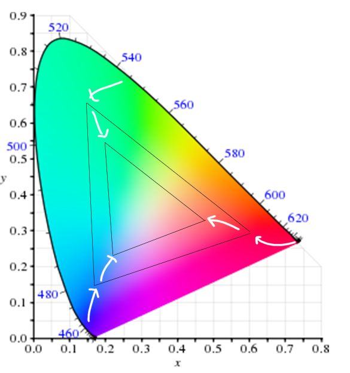

So we will break the thing into 3 parts.
We will start with the technical part.
This will be simplified explanation. But I will try to touch on very complex things. So later when you run into problems you can research more.
So now to jump into the problem. We have three things.
And this is where we run into the issue. A color on the screen, is not the color you see on the when printed.
To understand what is we need to know about a little thing called. CIE color spectrum
This is all the colors the human can see. Also this chart is not actually 2D. its 3D and you kind of notice there are no dark colors but anyways. This is the whole spectrum of colors that the human can see.
Notice here
And thats why we have to switch between RGB,CMYK. If you use rgb. and print it. It cannot print this color Using CMYK lets you only use the colors the printer can print.
That is the simplified version of color science and color management. This is important to know because this is how computers deal with colour
So us working on digital screens work with R,G,B. But sometimes R G B is not efficient enough to do what we want. So we have things like. HSB Hexadecimal. Go to coolor.co
Color carries 90% of your art work Whether its a video or photo, design, even physical products.
This section is about finding out what colors work.
Lets start of by playing with 2 colors.
There are so many ways you can choose which 2 colors work. lets check in adobe site
This is called. Color harmony.
Lets start with
As said in last class. You can apply a color or gradient to any stroke or fill.
Find the color tab in windows. Lets explore this.
Lets create some artboards. Artboards a different from Documents. These are documents. These are artboards. These boards can be individually exported. And we will do that today
Make a total of 9 artboards.
Lets create simple artworks.
You can use illustrator color guide.